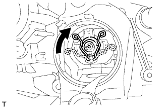

ФАРА В СБОРЕ (для моделей с газоразрядными фарами) > ПОВТОРНАЯ СБОРКА |
| 1. УСТАНОВИТЕ ОТРАЖАТЕЛЬ ЛЕВОЙ ФАРЫ |
 |
Подсоедините разъем.
Установите отражатель левой фары и закрепите его 3 винтами.
| 2. УСТАНОВИТЕ ПРОКЛАДКУ ФАРЫ |
Установите новую прокладку.
| 3. УСТАНОВИТЕ ЭБУ УПРАВЛЕНИЯ ЛЕВОЙ ФАРОЙ В СБОРЕ |
Подсоедините разъем.
Установите ЭБУ управления освещением в сборе и закрепите его 4 винтами.
| 4. УСТАНОВИТЕ ЛЕВЫЙ ЭЛЕКТРОДВИГАТЕЛЬ СИСТЕМЫ УПРАВЛЕНИЯ УРОВНЕМ ФАР |
Присоедините наконечник вала электродвигателя системы управления уровнем фар к отражателю, как показано на рисунке.
Поверните электродвигатель управления уровнем фары в направлении, указанном на рисунке стрелкой, чтобы установить его.
| 5. УСТАНОВИТЕ ЛАМПУ ПЕРЕДНЕГО УКАЗАТЕЛЯ ПОВОРОТА |
Установите лампу.
| 6. УСТАНОВИТЕ ПАТРОН ЛАМПЫ ПЕРЕДНЕГО УКАЗАТЕЛЯ ПОВОРОТА |
 |
Поверните патрон в направлении, указанном стрелкой, чтобы установить его.
| 7. УСТАНОВИТЕ ЛАМПУ ГАБАРИТНОГО ФОНАРЯ |
 |
Установите лампу.
Поверните патрон в направлении, указанном стрелкой, чтобы установить его.
| 8. УСТАНОВИТЕ ЛАМПУ ФАРЫ № 2 |
 |
Поверните лампу в направлении, указанном на рисунке стрелкой, и установите ее.
| 9. УСТАНОВИТЕ ГАЗОРАЗРЯДНУЮ ЛАМПУ ФАРЫ |
|  |
Зафиксируйте установочную пружину, чтобы установить газоразрядную лампу фары, как показано на рисунке.
Поверните разъем ЭБУ управления освещением в направлении, указанном стрелкой, чтобы подсоединить его.
| 10. УСТАНОВИТЕ ЗАДНЮЮ КРЫШКУ ФАРЫ № 1 |
Поверните заднюю крышку в направлении, указанном стрелкой, чтобы установить ее.